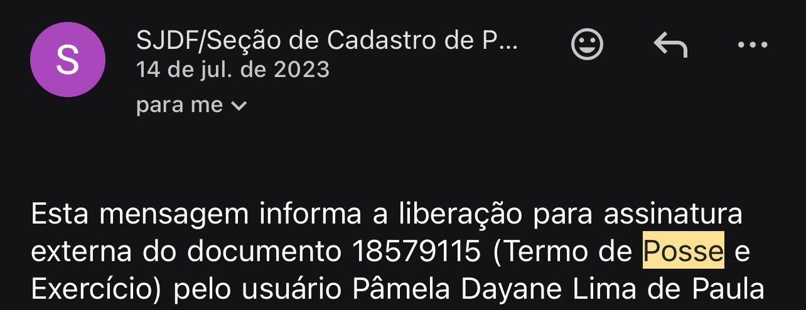
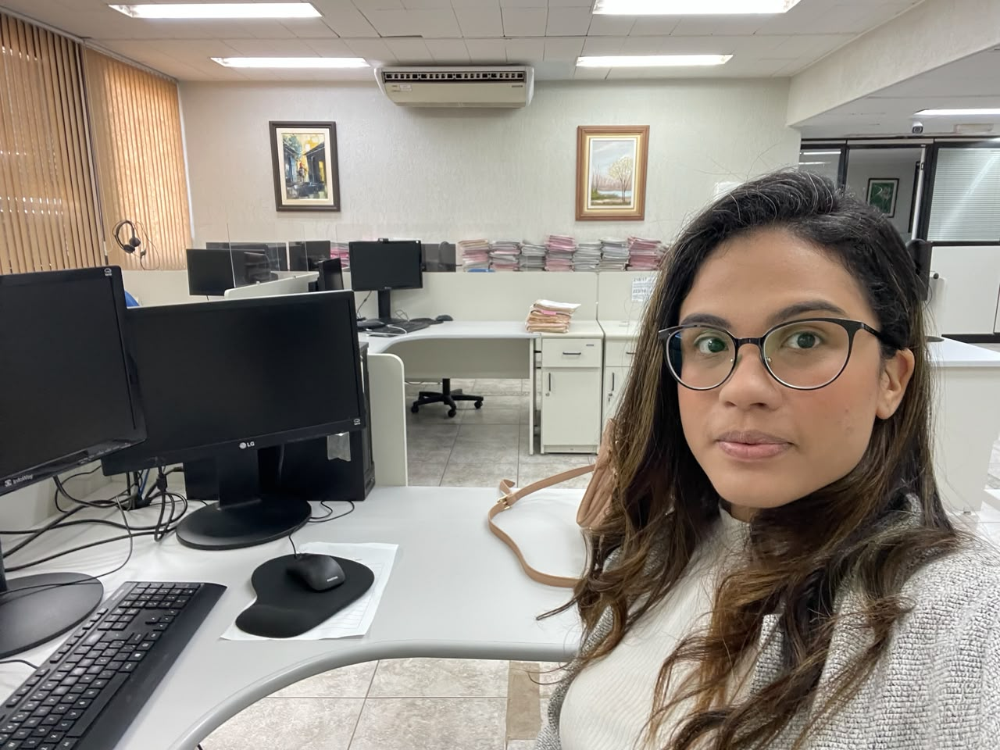
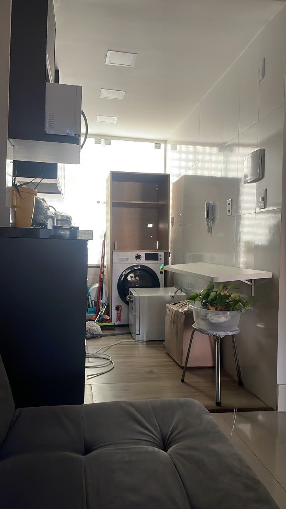
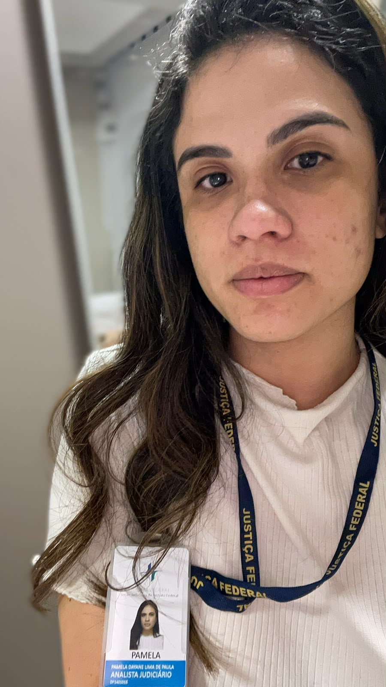

Guardo com carinho o e-mail que mudou tudo. Ele chegou em 14 de julho de 2023, informando a liberação para assinatura do meu Termo de Posse e Exercício. Uma mensagem simples, burocrática até. Mas, pra mim, era a confirmação de que valeu a pena cada madrugada estudando.

Uma semente plantada em 2017
Foram seis anos entre o sonho e a nomeação. Comecei a estudar em 2017, sem garantia nenhuma de que daria certo. Eram ciclos de estudo, editais, provas, resultados que nem sempre vinham, e a decisão diária de continuar mesmo assim.
Quem é concurseiro sabe: a caminhada é solitária e cheia de "ainda não". A gente planta sem ver o fruto, confiando que um dia ele vem. E veio.
O que esse cargo transformou na minha vida
Um trabalho que impacta pessoas de verdade
O que mais me enche de propósito é saber que a atividade que exerço toca diretamente a vida das pessoas. Cada processo que passa pelas minhas mãos é a história real de alguém esperando por uma resposta, por um direito, por justiça. Não é papel: é gente.

Mais conforto e liberdade de escolha
Eu já tinha a minha independência financeira antes desse cargo, construída com muito esforço. Mas o que ele me trouxe foi outra coisa: mais conforto, mais liberdade para fazer as minhas próprias escolhas e a tranquilidade de poder mirar sonhos maiores, sem medo. É a diferença entre se sustentar e poder, de fato, projetar o futuro que se deseja.

E agora, a estabilidade
Depois do estágio probatório, chega a estabilidade, esse chão firme que me permite sonhar ainda mais alto. É a base sobre a qual vou continuar construindo, inclusive rumo ao meu próximo objetivo.

O maior aprendizado
Mais do que um cargo, essa data me fez rememorar uma verdade que a correria do dia a dia às vezes faz a gente esquecer: eu sou capaz.
Capaz de recomeçar, de insistir, de transformar estudo em realidade. E se eu fui, você também é.
Se você está agora no meio da caminhada, plantando a sua semente e ainda sem ver o fruto, fica o meu recado: continua. A colheita chega. 🌱